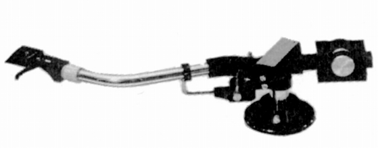
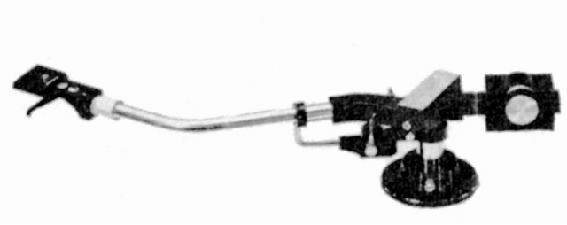
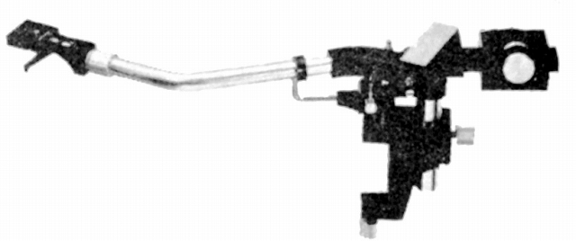

EPA-121
ショートタイプの「S」、ロングタイプの「L」、ロングタイプをサブアームなどで簡単に使用できるようにした「T」がある。
EPA-121S

■価格 15,500円
■型式 スタティックバランス型
■全長
■実行長 220�o
■オーバー・ハング 14�o
■トラッキングエラー +3゜（レコード外周）
-0.2゜（レコード内周）
■針圧範囲 0〜4g 0.5gステップ
■アーム高さ調整 25〜50�o（アームパイプ中心から）
■アームベース穴 21〜23�o
■アンチスケートディバイス
■アームリフター
■ラテラルバランサー
■カートリッジ自重 5〜12g
■線間容量
■発売 1974〜75年
■販売終了 1978〜79年頃
■備考 価格は1975年頃のもの
後部最大長 80.5�o
EPA-121L

■価格 17,500円
■型式 スタティックバランス型
■全長
■実行長 242�o
■オーバー・ハング 15�o
■トラッキングエラー +2.5゜（レコード外周）
-1.2゜（レコード内周）
■針圧範囲 0〜3g 0.25gステップ
■アーム高さ調整 25〜50�o（アームパイプ中心から）
■アームベース穴 21〜23�o
■アンチスケートディバイス
■アームリフター
■ラテラルバランサー
■カートリッジ自重 3〜10g
■線間容量
■発売 1974〜75年
■販売終了 1977年
■備考 価格は1975年頃のもの
後部最大長 84�o
EPA-121T

■価格 19,500円
■型式 スタティックバランス型
■全長
■実行長 242�o
■オーバー・ハング 15�o
■トラッキングエラー +2.5゜（レコード外周）
-1.2゜（レコード内周）
■針圧範囲 0〜3g 0.25gステップ
■アーム高さ調整 25〜50�o（アームパイプ中心から）
■アームベース穴
■アンチスケートディバイス
■アームリフター
■ラテラルバランサー
■カートリッジ自重 3〜10g
■線間容量
■発売 1974〜75年
■販売終了 1977年
■備考 価格は1975年頃のもの
後部最大長 84�o